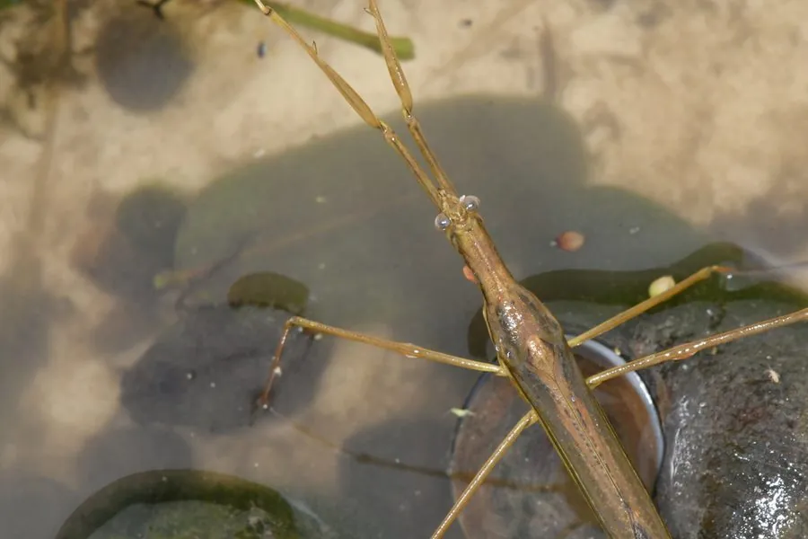

昆虫 · 动物界
水螳螂 Ranatra chinensis

身体细长如枯枝的水生蝽，前足呈镰刀状，腹末有长呼吸管，常静止在水草间伏击小鱼和蝌蚪，是池塘中的伏击型捕食者。
- 分类
- 门节肢动物门纲昆虫纲目半翅目科蝎蝽科属水螳螂属
- 栖息环境
- 池塘、沟渠、稻田和缓流河溪的浅水处，多攀附在水草间
- 地理分布
- 中国大部分地区，以及日本、朝鲜和东南亚
- 保护级别
- 暂无评估
物种志
水螳螂成虫体长 40–45 mm，身体极度细长，呈黄褐至灰褐色，外形酷似一段枯枝或水草的茎。前足为镰刀状的捕捉足，基节很长；中足和后足细长，用于攀附水草；腹部末端有一根长长的呼吸管。
水螳螂分布于中国大部分地区以及日本、朝鲜和东南亚，生活在池塘、沟渠、稻田和缓流河溪的浅水处。它常静止在水草或枯枝间，把身体伪装成植物的一部分，靠前足闪电般合拢捕食靠近的小鱼、蝌蚪和水生昆虫。呼吸时把腹末的长管伸出水面换气，因此它必须生活在有一定水深、能接触水面的地方。雌虫把卵产在水生植物的茎秆内，卵顶伸出两根细长的呼吸丝。水螳螂对水质较敏感，可作为湿地环境质量的指示生物。
形态与习性
- 食性捕食小鱼、蝌蚪和水生昆虫
- 体长40–45 mm
- 呼吸管腹末有细长的呼吸管，可伸出水面换气
- 伪装身体细长似枯枝，静止时与水草难分
- 繁殖卵产在水生植物茎秆内，卵顶伸出呼吸丝
- 环境指示对水质敏感，可用于湿地监测
趣味知识
- 水螳螂细长的身体像一截枯枝，连关节都模仿了树枝的节疤。
- 它捕猎时几乎不动，等小鱼游到跟前才突然伸出镰刀状前足。
- 水螳螂的卵插在水草茎秆里，顶端伸出两根细丝用于呼吸。